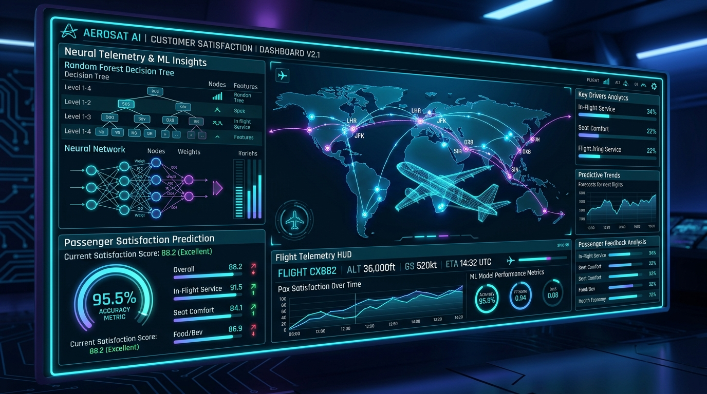

Production MLAirline Customer Satisfaction ML System
Production-grade end-to-end Machine Learning pipeline and interactive Streamlit web application trained on 129,880 passenger survey records to predict satisfaction with 95.5%+ accuracy, isolate in-flight bottlenecks, and optimize retention.